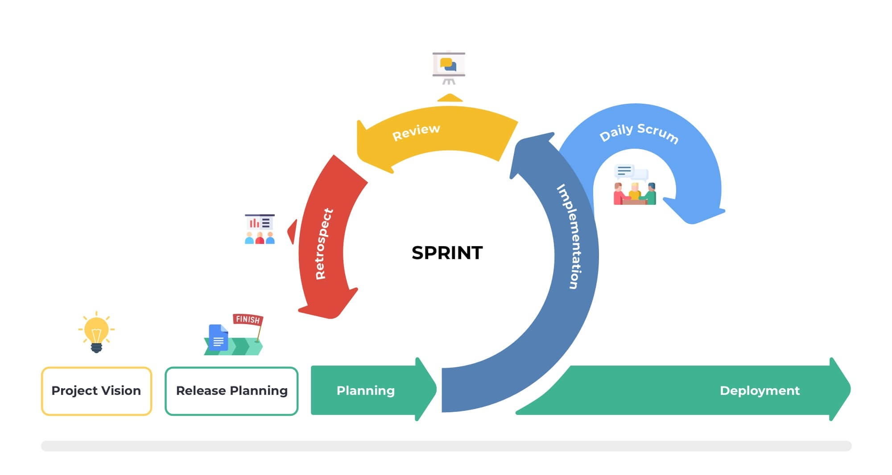

SCRUMZY
Bienvenue sur "Scrumzy", un site dédié à la méthodologie Scrum, développé par Ervan Lemqadem dans le cadre du cours démoMot à l'ETML. Découvrez comment Scrum, un cadre de travail agile, permet aux équipes de collaborer efficacement sur des projets complexes. Explorez les rôles, les cérémonies, les artefacts, les valeurs fondamentales de Scrum. Vous trouverez également une page FAQ pour répondre à vos diverses questions ainsi qu'une page sur l'auteur de ce site
Comment fonctionne Scrum?
Scrum est basé sur des itérations courtes appelées "sprints", qui durent généralement de deux à quatre semaines. Chaque sprint commence par une planification où l'équipe décide des tâches à accomplir. Pendant le sprint, l'équipe travaille sur ces tâches, et à la fin du sprint, un incrément de produit potentiellement livrable est produit.
Les différent éléments qui forment SCRUM
En adoptant Scrum, les équipes peuvent améliorer leur productivité et leur capacité à livrer des produits de haute qualité, tout en s'adaptant rapidement aux changements et aux nouvelles exigences. Pour en savoir plus sur chaque composant de Scrum, explorez les sections dédiées de notre site.